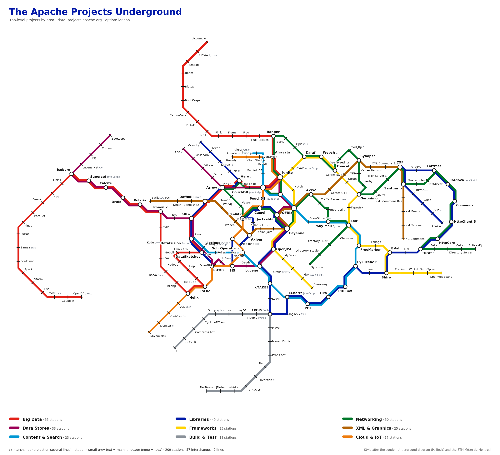
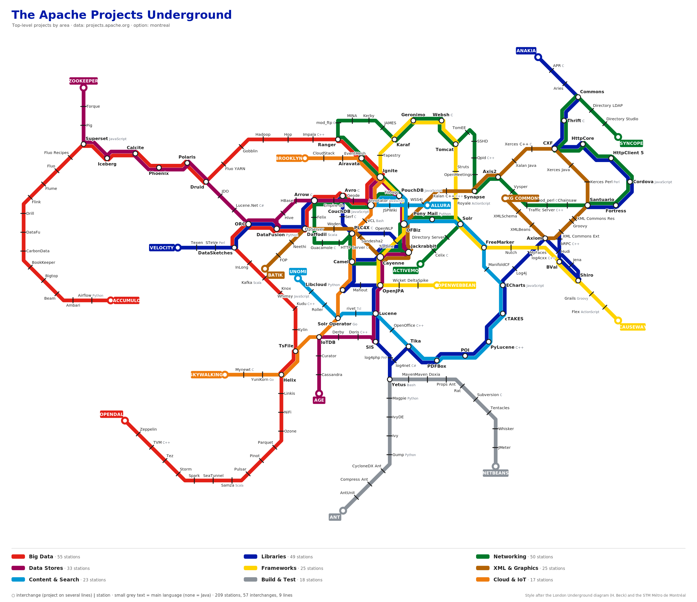
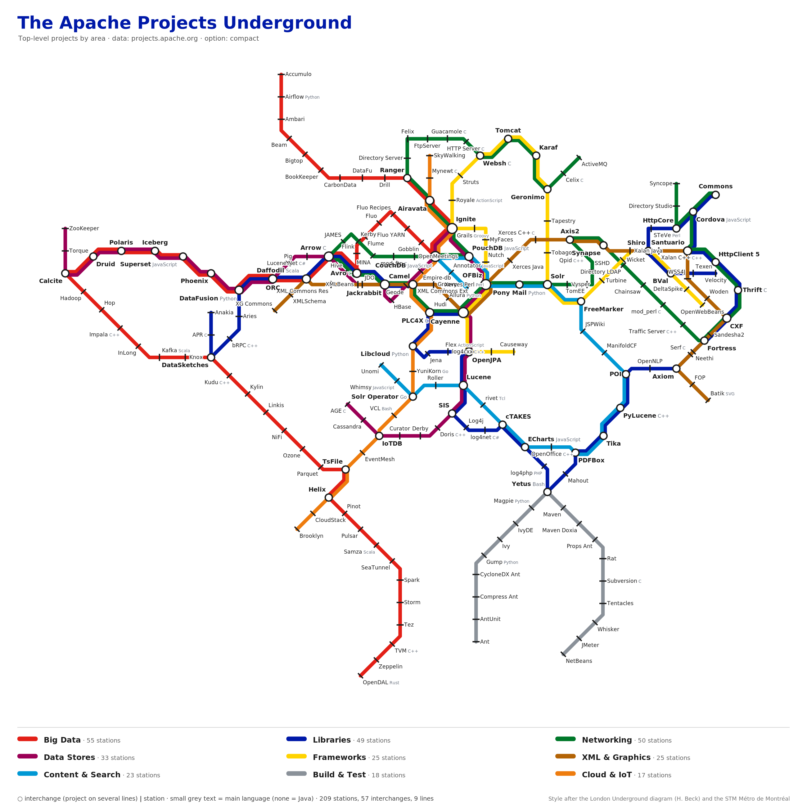
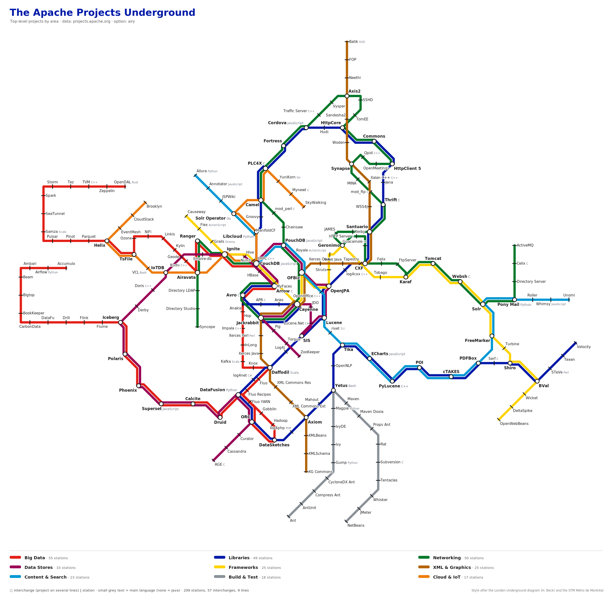
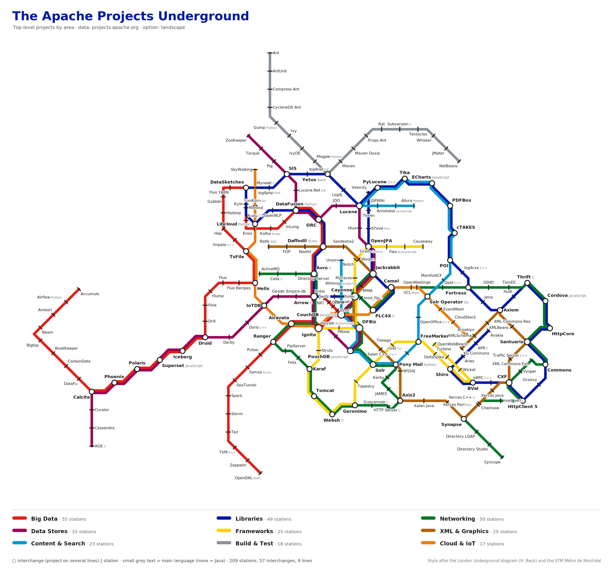
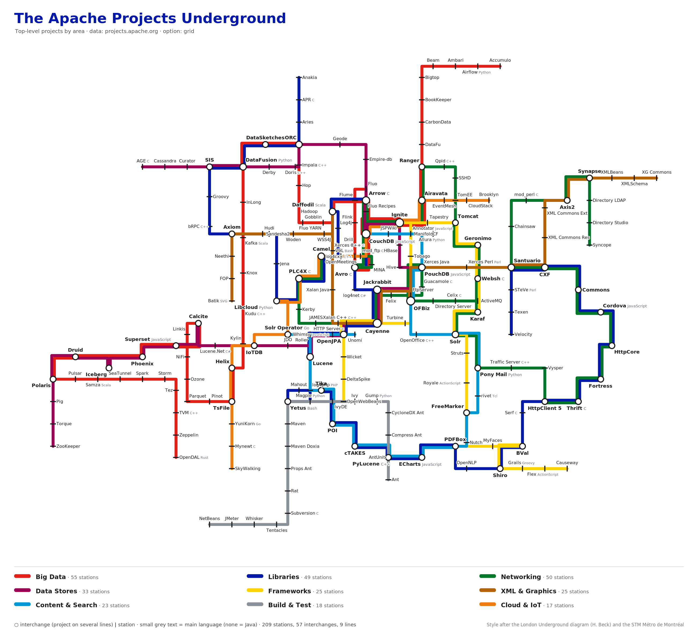

5 crossings · longest straight run 5.6 stations · empty-space radius 4.39 · 1 label clashes · svg · interactive

15 crossings · longest straight run 4.8 stations · empty-space radius 4.11 · 1 label clashes · svg · interactive

5 crossings · longest straight run 7.1 stations · empty-space radius 4.41 · 4 label clashes · svg · interactive

12 crossings · longest straight run 6.5 stations · empty-space radius 4.12 · 1 label clashes · svg · interactive

11 crossings · longest straight run 7.2 stations · empty-space radius 4.93 · 1 label clashes · svg · interactive

50 crossings · longest straight run 9.0 stations · empty-space radius 4.22 · 1 label clashes · svg · interactive